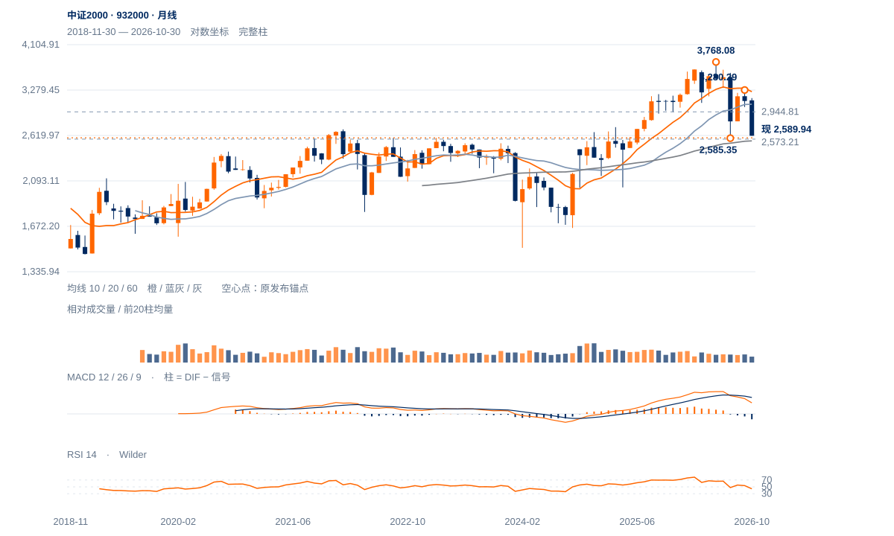

跨月双谷候选失效
未来1—5个交易日偏向破位后的弱反抽，2576—2585成为第一道回收检验，2636—2676仍是上层供应。快速回收两谷可产生新候选，但今天的原条件失败需保留。
未来1—5个交易日偏向破位后的弱反抽，2576—2585成为第一道回收检验，2636—2676仍是上层供应。快速回收两谷可产生新候选，但今天的原条件失败需保留。
未来2—6周以“跨月双谷候选失效”为基准。旧谷附近反弹若不能越过较低高区，中期下降结构继续约束反抽空间。先日收重新站上2585并保持；原2900突破和2788回测门槛保留，3280仍是跨月大中峰。2576原日收失效已发生；2531.10为新低观察，不下移旧失败线。连续周收失守需等完整周线，今天不能提前计为两周。
未来1—3个月由跨月双谷守边下调为失败后的结构重建。2551月均衡附近能否重新抬高低点仍待验证；连续两周收低2576进一步削弱大底候选，周收突破3280才建立较完整反转依据。

展开图表 ↗7月2585与11月2576形成跨月双谷候选，中峰3280尚远，不能把局部反弹当已确认大底。2636半幅回撤与2664—2676旧高区已在现价上方。完整10月20月均衡3,057.83；本月价格变化尚未成为已完成月线确认。
已完成周线的主要锚点：2026-08-18高3,234.91；2026-08-25低2,999.26；2026-09-22高3,280.29。从这些同级峰谷观察，中期恢复尚需较高谷与越过反弹高点相继出现，单根下影或当日涨幅不能替代。本周仍未结束，18日表现只作进行中周的观察。
18日收2562.74，首次日收低于11月2日2576.02及7月2585.35两谷，原2576失效条件触发。最低2531.10又回到完整60月均衡2551之上，却不足以保留原双谷尚守的结论；跨月筑底只是未突破3280中峰的候选，本次下破不能叫已确认双底后的失败。相对量0.90倍，反抽2606.58后仍低收。
2026-09-11低3,016.48（2026-09-18确认）；2026-09-22高3,280.29（2026-09-30确认）；2026-11-02低2,576.02（2026-11-09确认）
先日收重新站上2585并保持；原2900突破和2788回测门槛保留，3280仍是跨月大中峰。
2576原日收失效已发生；2531.10为新低观察，不下移旧失败线。连续周收失守需等完整周线，今天不能提前计为两周。
收盘仍高于2551月均衡、日内自2531回收，卖压有可能在长期承接带减弱。若随即收回2585并向2636推进，破位延续基准应降级，但不能追溯抹去18日失效。
RSI14 34.71；ATR14 90.09；相对成交量0.90倍；ER20 0.260。
完整周线至11月13日，完整月线至10月30日；本周与11月尚未结束。指数价格不复权；长期历史按实际可得起点。